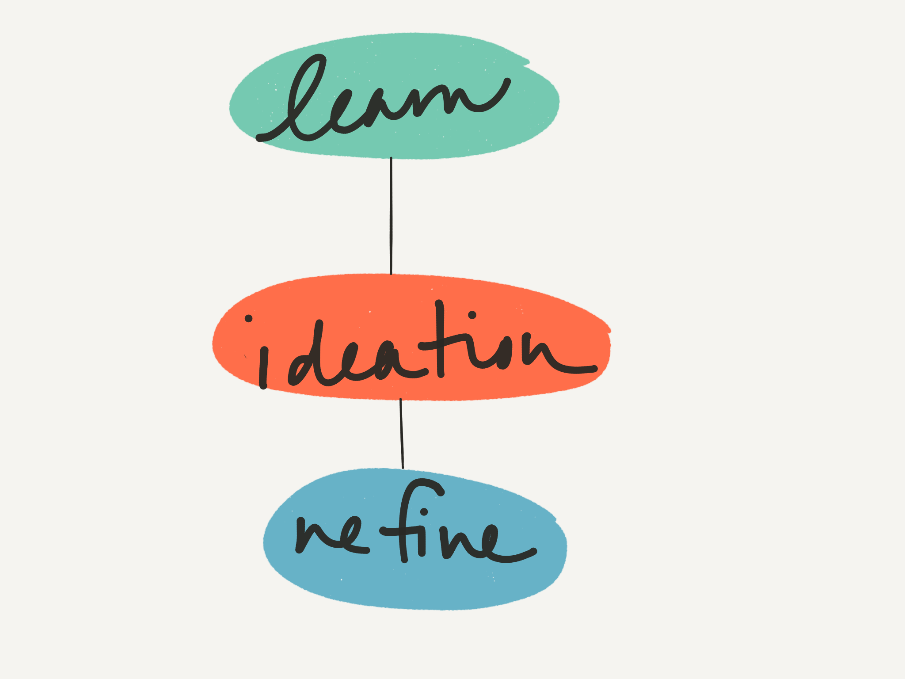
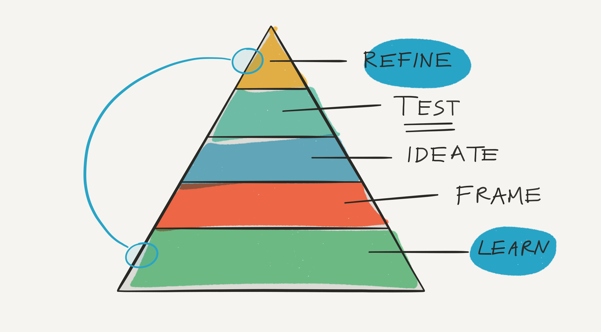

One of my design students asked me recently how I start a branding and identity project. I had to stop and think for a moment because, although I have a systematic approach to developing new brand identities, I don't think I had articulated my process in a linear way. In fact, I would argue that approaching branding and identity is more of a cyclical process, starting with research, testing your ideas and finally refinement.
I approach my projects in 5 fluid phases:
At each one of these phases, I may uncover some areas of refinement, such as a different direction that might speak better to the audience, or a misalignment on the core framework, and will cycle back to another stage and repeat the process.
During this phase, I'm learning about the brand. I want to orient myself on all aspects of their messaging, goals, intended audience, and project requirements. During this stage, I'm delving into empathetic problem solving and trying to get outside of my own biases.
This stage is challenging. I'm focusing on the user at the center of my research, or applying design thinking to my learning.
Depending on the resources and the timeframe, I'll usually conduct several initial studies to help guide me during my research
If I have the opportunity to sit down an interview several stakeholders, I'll ask about developing a emotional design
Design Tip: If you're having difficulty talking with stakeholders or customers, conduct your own field research. Ask your network, peers, local academic community, or random people on the street for feedback.
In the previous stage, I've learned about brand and their goals, now I want to narrow my focus. During this generative phase, I'm looking for various themes from the previous learning phase and forming a framework for the brand. Are there clear parallels between themes? For example, are there overlapping insights such as themes of "simplicity" and "clear"? Are there mismatches in these themes that need to be discussed further?
This research may open up gaps in my framework. If my project goals aren't clear or I haven't fully explored the user's mental model, I may go back to the Refine stage and start over.
This is my favorite phase in the design process, because this is where I can take all the previous research and start exploring the concepts visually. The visual application of the design is the final phase of the project, and is always based on extensive research.
After my initial research and ideation phase, I'll test my designs, either the low-fidelity or high-fidelity mocks. I'm looking at two types of tests: what are users preferences about the design and how functionally successful is the design. Sometimes the designs with the higher preference might have lower success rates.
I've researched, tested and iterated on my designs. Now, I'll gather the research and present the findings in a branding guide. By now, I've spent probably 70% of my time on research and ideation, about 30% on actual design. By following this model, I'm ensuring that my designs are grounded in research methods and empathy, rather than my opinion on what looks nice.
In this branding guide, I'll include:
* There are a lot of excellent resources available for usability testing. You can take a look at some of the resources I put together, or reach out for more information.